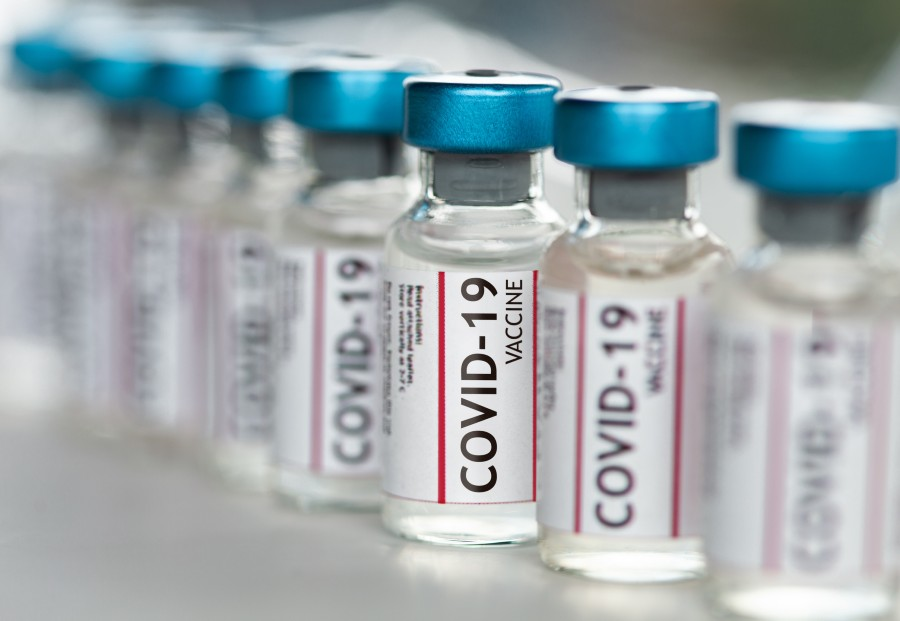
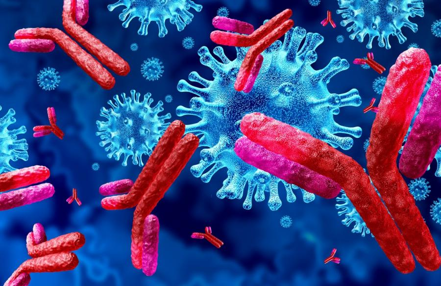
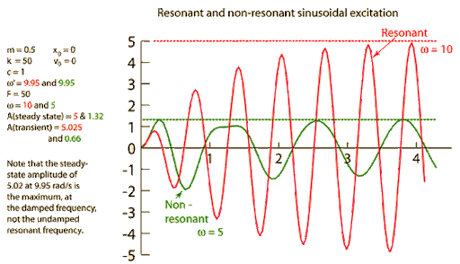

Vaccines
Vaccines are the most common alternative solution for the Covid-19 today,
and there are thousands of filipinos from camalaniugan that has already been
vaccinated. There maybe some small side effects from it but it is the most used
way today. And in the near future this could just stop the speading of the virus.

Antibody Therapy
The Antibody Theraphy or the Monoclonolical Antibody Therapy, this is the
first alternative treatment for corona viruses bofore the vaccine has made.
This treatment that uses antibodies to help fight canser, infection, or other
diseases. Antibodies are proteins that are made by the immune system that bind
to specific markers on the cells or tisues.

Destructive Resonace Frequency
This method is was an idea of mine that I presented on May 30, 2020. The use of sound
waves to crush the virus within the infected body without harming the other parts
of the body. This works by resonating two frequencies at the same time, the other
should be low and the other is a high frequency. Using the eleven't harmonic in music
and carefully experimenting the right frequencies needed the virus will be destroyed
in no time. Maybe other researchers also got the idea of this kind of method and
already made their research papers regarding it. So I would not really consider this
100% invented method by me. Though I have a unique designed gadget for this, made from
junk I have at home. Its is made from two ultrasonic mistmaker and an old frequency meter
the gadget is designed to look like a pendant so that when you are using it, the frequency
would be near to your lungs which is the area where the virus attacks.
